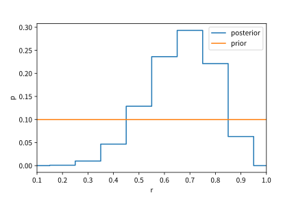

到底什麼是 Bayesian
最近在公司內部的讀書會跟同事一起讀了這本「Probabilistic Programming and Bayesian Methods for Hackers」，看了很久覺得充滿許多疑惑，沒有辦法把概念跟概念連結起來，所以我在這邊試著以寫這篇文章的方式來對我自己解釋。
如果有發現文章敘述有誤，或是有更好的敘述方式，請告訴我一聲！
什麼是 Bayes’ Theorem
Bayes’ Theorem 來自於條件機率的公式： \[ P(A|B) = \frac{ \color{red}P(B|A) \color{black}\cdot \color{blue}P(A)}{\color{green}P(B)} \]
- 我們有兩個事件\(A\)、\(B\)
- \(\color{blue}P(A)\)、\(\color{green}P(B)\) 是 \(A\) 跟 \(B\) 獨自發生的機率
- \(P(A|B)\) 及 \(\color{red}P(B|A)\) 分別是已知 \(B\) 之後 \(A\) 發生，以及反過來的機率，又被稱為 likelihood
怎麼應用 Bayes’ Theorem
網路上有很多例子：檢測藥品反應、猜測一個人的性別、找出骰子點數應該來自幾面骰，類似的例子很多，就是將兩個機率擺在一起，然後用觀察到的證據來找出問題的答案。
我就偷懶一下直接借用維基百科的藥品檢測的例子：
- 假設有 0.5% 的人使用了這個藥品（\(P(\text{User}) = 0.005\)）
- 而藥物測試的準確率是 99% （\(P(\text{+} | \text{User}) = 0.99\)）
那麼一個測出藥物反應的人真的有使用此藥物的機率有多高？
\[ \begin{aligned} P({\text{User}}\mid {\text{+}})&= {\frac {P({\text{+}}\mid {\text{User}})P({\text{User}})}{P(+)}}\\ &={\frac {P({\text{+}}\mid {\text{User}})P({\text{User}})}{P({\text{+}}\mid {\text{User}})P({\text{User}})+P({\text{+}}\mid {\text{Non-user}})P({\text{Non-user}})}}\\[8pt] &={\frac {0.99\times 0.005}{0.99\times 0.005+0.01\times 0.995}}\\[8pt] &\approx 33.2\% \end{aligned} \]
Bayesian Inference for Parameter Estimation
跟前面的 Bayes’ Theorem一樣，但是這次將目標改變了一下： 用證據\(E\)（training data）來找出模型參數\(θ\) 的機率分佈
\[\begin{darray}{rlc} P(θ|E) &=& \frac{ \color{red}P(E|θ) \color{black}\cdot \color{blue}P(θ)}{\color{green}P(E)} \\[1em] &=& \frac{ \color{red}P(E|θ) \color{black}\cdot \color{blue}P(θ)}{\color{green}\int_θ P(E|θ') \cdot P(θ')\ dθ'} \end{darray}\]
- \(\color{blue}P(θ)\) 稱為先驗機率，也就是對於某事物的猜測。
- \(P(θ|E)\) 稱為後驗機率，也就是觀察到 證據E 之後 H 的條件機率。
- \(\color{red}P(E|θ)\) 稱為 likelihood function，有時會寫成 \(L(θ|E)\)。
- \(\color{green}P(E)\) 稱為 marginal likelihood，或是證據 E 事件所發生的機率
怎麼進行 Bayesian Inference？
跟前面一樣，建模者需要指定好：
- likelihood function，也就是描述資料是怎麼產生的函數，
- prior，描述我們對目標參數的先驗知識。
我在 Stack Overflow How can I profile C++ code running in Linux?
上面看到了一個對 programmer 很有趣（也很實用）的應用：應用貝葉斯來做 profilingProfiling 在軟體開發上指的是分析程式的執行狀況，以找出時間或是記憶體花費較多的片段來進行改進。
！
用這個作法只需要用 debugger 執行程式的時候，任意中斷個數次，然後觀察中斷時的 call stack，找看看裡面有沒有反覆出現的 function call。
假設我們觀察到了一個很常出現的函數，它在中斷 10 次中出現了 7 次，我們想知道它出現在 call stack 的比率 \(R\)，也就是找出：
{-} \(T\) 表示出現在 call stack 的次數， \(F\) 表示沒有出現的次數
\[ P(R | T=7, F=3) = \frac{P(T=7, F=3 | R) P(R)}{P(T=7, F=3)} \]
為了化簡計算的複雜度，原文將 \(R\) 分成 10 種可能 \(0.1, 0.2, \cdots, 1.0\)。這是為了舉例方便，實際上就得乖乖的去算積分了…
我們不知道這個函數實際上的出現比率，所以我們用 Uniform Distribution 作為 Prior。
\[P(R=r) = 0.1, \, r = 0.1, ..., 1.0\]
因為 \(R\) 是離散的，我們可以直接算出每一個 \(P(T=7, F=3 | R=r)\) 的數值，剛好就是 Binomial Distribution：
\[P(T=t, F=f | R=r) = {t+f \choose t}\,r^{t}\,(1-r)^{f}\]

求出 \(P(R | T=7, F=3)\) 之後，可以畫成圖來檢視、找出MAP、或是期望值。從右圖可以看到，後驗機率分佈的最高點落於 0.7，我們可以比較兩者的面積：
\[\begin{aligned} P(R | T=7, F=3, r = 0.7) \approx 30\% \\ P(R | r = 0.7) \approx 10\% \end{aligned}\]
也就是在觀察到了證據之後，\(r = 0.7\) 的機率從 10% 更新到 30% 了！
什麼是 likelihood function？
單看 likelihood function \(P(E|θ)\) 的話，我覺得很奇怪，什麼是觀察到先驗H後證據發生的機率？
在 google 了好一段時間之後，我認為比較好的解釋方法是， likelihood 是「取得 證據B 來自於某個先驗 A 的機率」的函數 Think Bayes 的 The diachronic interpretation
likelihood function迷思
，換句話說，就是描述證據（資料）是如何被產生的。
一個簡單的例子是，投擲 \(N\) 次正面機率為 \(p\) 的硬幣，觀察到的資料會是「\(N\)次 裡面有 \(t\) 次正面」的證據， likelihood function 這時會訂成 \[P(E|θ) = L(\underbrace{p}_{\text{參數}\, θ} | \underbrace{N, t}_{\text{證據} \, E}) = {N \choose t} {p}^t {(1 - p)}^{N - t}\]
Frequentist vs. Bayesian
統計上有兩個流派：
- Frequentist 認為機率就是頻率，而建模就是去最大化 likelihood
- Bayesian 使用主觀的先驗知識來進行「預測」
兩者在資料量夠大的情況會得到一樣的答案，但是 Bayesian 能在資料量不夠多時，搭配先驗知識，做出更好的預測。
跟 Sampling 的關係
找出後驗機率分佈的時候，計算 Marginal likelihood 是一件困難的事Bayesian posterior sampling - YouTube
15.097: Probabilistic Modeling and Bayesian Analysis
，少數狀況下可以利用挑選適當的共軛先驗來化簡計算，但是大多數的情況下是辦不到的。
但是因為在後驗機率分佈的時候，常常不需要知道準確(exact)的分佈，於是可以用從後驗機率分佈抽樣來取代。
怎麼從後驗機率分佈中抽樣？
細節我雖沒有深入了解，但是大概是利用 MCMC 或是 Metropolis 演算法來做，可以參考：
- Probabilistic Programming and Bayesian Methods for Hackers 書中的 Ch.4 有簡單介紹爬山法的概念
- MCMC sampling for dummies 介紹如何手寫一個後驗機率分佈的 sampler
Probabilistic Programming?
Probabilistic Programming 是一種用軟體建立機率模型跟利用它們進行 inference 的方法出自Hakaru 的官網
，實作上可能是一門獨立的新語言(DSL) 或是以 library 的方式嵌於某個 General-Purpose 的語言裡面。不論是 Frequentist 或是 Bayesian Inference 都可以用這個方法實作，但是比較常看到 Bayesian Inference 使用。
PyMC3 就是一個實作 Probabilistic Programming 的 Python library，舉例來說，前面的 profiling 問題可以用 PyMC3 表達成：
小結
雖然在寫這篇文章的過程中，解決了我心中不少的疑惑，但是仍然還是有許多似懂非懂之處，如果有新發現的話會再更新這篇文章。